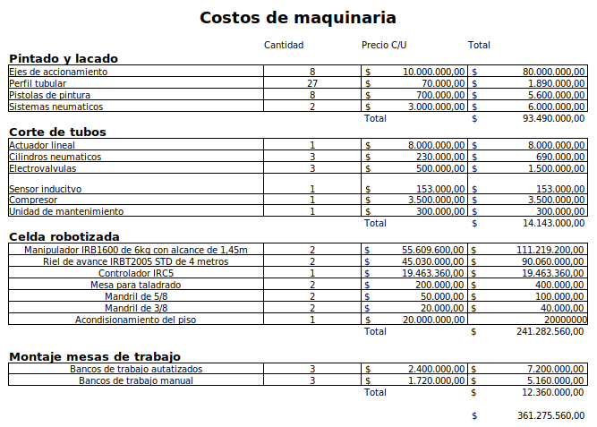

En el archivo de Excel que se presenta, se encuentra la evaluación económica de la automatización de la planta de producción de artículos en madera. En la primera hoja se realizaron los cálculos de todos los gastos que conllevaría el proyecto, adicionando la simulación de la empresa a la cual se hará la venta, teniendo el costo de materia prima y gastos fijos como la nómina, los servicios y otros. Luego de ellos se saca cuanto debería vender la empresa para poder pagar el crédito para la financiación del proyecto y sus gastos fijos más la materia prima. En la segunda hoja se realiza todo el análisis financiero del flujo de caja, VPN, payback y TIR. En la tercera hoja está la amortización del crédito
También se presenta la oferta comercial que puede ser consultada aquí . Los costos que se tienen encuenta para la estimación de la tasa interna de retorno del proyecto se registran en las siguientes 2 tablas.

Tabla de costos del proyecto.
Materia prima y costos legales y administrativos.
Finalmente, luego de realizar el análisis de resultados para los primeros 5 años de puesta en marcha sen encuentra que la TIR del proyecto es del 3% EM o 25% EA. Teniendo en cuenta la inflación anual del 12% EA podemos concluir que la Tasa interna de retorno efectiva anual real es del 13% EA. Para la aplicación de este proyecto se plantea como objetivo una TIR real no menor al 7% EA y por tanto se considera una solución implementable bajo los parámetros considerados en las tablas anteriores.